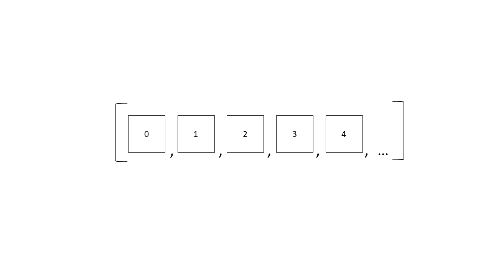
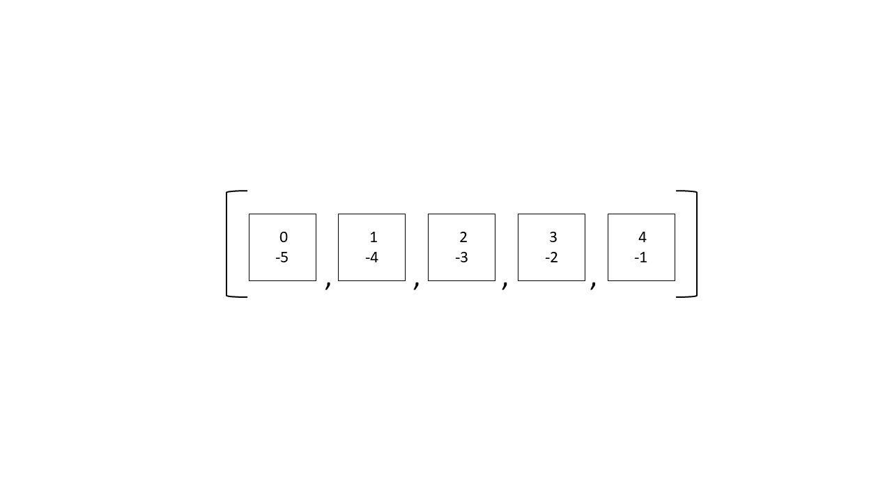
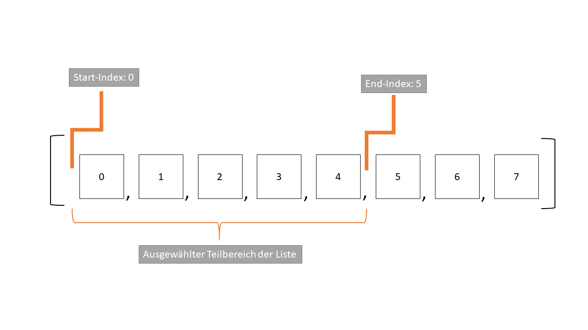

Der Zugriff auf Listen¶
Im Folgenden schauen wir uns die Eigenschaften von Listen etwas näher an. Wir gucken uns zunächst an, wie wir an den Inhalt von Listen rankommen, nachdem wir diese erstellt haben und wie wir diesen Inhalt verändern können. Dann werfen wir u.a. noch einen Blick auf die wichtigsten “Funktionen” von Listen, der “aktiven” Seite von Listen.
Auf Elemente in Listen zugreifen: Indizierung¶
Es ist ja schön und gut, dass wir die Agenten als Listen von Eigenschaften und die Population der Agenten als Liste von Listen von Eigenschaften repräsentieren können. Doch all das bringt uns nichts, wenn wir gar nicht wissen, wie wir auf die Elemente der Listen zugreifen können.
Denn später werden wir in unseren Simulationen eigentlich immer das Folgende machen: Wir …
… gehen (automatisiert) eine “Populations-Liste” mit Agenten durch
… greifen nacheinander auf die Agenten zu
… greifen bei den jeweiligen Agenten auf bestimmte Eigenschaften zu
… machen irgendwas mit diesen Eigenschaften (z.B. ändern wir den Status
"infizierbar"in"infiziert"um)
Wir müssen also unbedingt lernen, wie wir auf die Elemente von Listen zugreifen!
Ein Weg, um auf die Elemente von Listen zuzugreifen, ist die sogenannte Indizierung. Bei der Indizierung geben wir an, an welcher Position in der Liste das gewünschte Element liegt, damit wir auf dieses Element zugreifen können. Steht ein Element beispielsweise an erster Stelle in einer Liste, dann muss man angeben, dass das Element an der ersten Position innerhalb der Liste liegt, um an das entsprechende Element zu kommen. Die Position eines Elements innerhalb einer Liste nennt man in Python auch Index. Daher heißt die Methode, bei der wir über einen solchen Index an das gewünschte Element kommen, Indizierung.
Schauen wir uns die Indizierung mal genauer an. Angenommen wir haben eine beliebige Liste und wollen gezielt auf ein Element innerhalb dieser Liste zugreifen. Wie machen wir das? Wir tippen die Liste bzw. den Variablennamen der Liste ein und schreiben direkt dahinter in eckige Klammern den Index d.h. die Position des entsprechenden Elements, das wir auswählen wollen. Das sieht ganz allgemein formuliert so LISTE[INDEX] bzw. so [ELEMENT, ELEMENT, ELEMENT, ...][INDEX].
Schauen wir uns das mal konkret am Beispiel der Liste agent, welche ich im Folgenden definiere, an.
agent = ['infiziert', False, 10]
Die Liste agent sieht als Gesamtpaket dann also so aus:
agent
['infiziert', False, 10]
Nun wollen wir in diesem Beispiel spaßeshalber gezielt auf das dritte Element der Liste agent zugreifen, z.B. weil wir den Wert für eine Berechnung brauchen oder wir diesen Wert verändern wollen. Wie wir gerade gelernt haben, müssen wir dazu den entsprechenden Positionsindex in eckigen Klammern hinter dem Variablennamen agent angeben. Jetzt müssen wir nur noch wissen, an welcher Position unser Element steht… ah ja, richtig, das Element steht an dritter Stelle, weshalb wir in die eckige Klammer hinter der Liste agent natürlich eine 2 eintragen müssen. Das mache ich nun:
agent[2]
10
Wie wir sehen, es funktioniert. Das dritte Element der Liste agent, die 10, wurde als einzelner Wert ausgegeben. Logischerweise muss man dazu die 2 als Positionsindex angeben. Man sieht, alles in Python ist super einfach und unmittelbar intuitiv. Dann können wir ja zum nächsten Thema übergehen!
Ich hoffe, deine Aufmerksamkeit für den Text war gerade so groß, dass du das hier gerade nicht einfach so hingenommen hast, sondern dir sofort dachtest: Hä!? Das dritte Element wird mit dem Index 2 aufgerufen? Da kann doch was nicht stimmen!
Aber doch, es stimmt. Und ich gebe zu, dies ist zunächst tatsächlich nicht besonders intuitiv. Man braucht etwas, um sich daran zu gewöhnen: In Python fängt man beim Zählen immer mit der 0 an. Auch die Durchnummerierung von Elementen einer Liste fängt daher bei 0 an. Das heißt, dass man auf das erste Element mit dem Index 0, auf das zweite Element kann mit dem Index 1 und auf das dritte Element mit dem Index 2 zugreifen kann - und so weiter. Dass das Zählen bei 0 beginnt, wird uns nicht nur bei Listenindizes noch beschäftigen und ist übrigens in fast allen professionellen Programmiersprachen so.
Hier greife ich z.B. auf das erste Element der Liste agent mithilfe des Index 0 zu:
agent[0]
'infiziert'
Folgende Graphik veranschaulicht die Durchnummerierung der Elemente in Listen:

Neben der aufsteigenden Durchnummerierung der Listen-Elemente beginnend bei 0 sind die Elemente in Listen auch auf eine weitere Form von hinten beginnend durchnummeriert. Und zwar kann man auf das letzte Element auch mit dem Index -1, auf das vorletzte Element der Liste mit dem Index -2, auf das drittletzte Element der Liste mit dem Index -3 zugreifen und so weiter. In der folgenden Abbildung sind neben den positiven Indizes durch die Nummerierung von vorne auch die negativen Indizes durch die Durchnummerierung von hinten abgebildet:

Hier greife ich beispielsweise auf das letzte Element der Liste agent mithilfe eines solchen negativen Index -1 zu:
agent[-1]
10
Und hier greife ich auf das erste Element der Liste agent mithilfe des Index -3 zu:
agent[-3]
'infiziert'
Listen (und ähnliche Datentypen) sind also “von vorne” und “von hinten” durchnummeriert. Man kann also mithilfe von positven und negativen Indizes auf die Elemente in Listen zugreifen. Im Normalfall verwendet man die positiven Indizes, dennoch kann es in manchen Situationen sehr hilfreich sein, auf die hinteren Elemente einer Liste mithilfe der negativen Indizierung zuzugreifen.
Elemente in Listen ändern¶
Mithilfe der Indizierung können wir nicht nur bestimmte Elemente einer Liste ausgeben lassen, sondern auch verändern. Dies machen wir genau so, wie wir Variablen definieren, geben aber auf der linken Seite des = keinen Variablennamen, sondern das entsprechende Listen-Element per Indizierung an, das verändert werden soll.
Im Folgenden ändere ich den Infektionsstatus des Agenten agent. Zur Erinnerung, wie agent aussieht, lasse ich diesen zunächst ausgeben. Der Infektionsstatus steht an erster Stelle.
agent
['infiziert', False, 10]
Nun ändere ich das erste Element der Liste agent, von "infiziert" auf "geimpft" um. Auf das erste Element kann man mit dem Index 0 zugreifen.
agent[0] = "geimpft"
Wenn wir uns nun agent anschauen, dann sehen wir, dass das erste Element entsprechend geändert wurde:
agent
['geimpft', False, 10]
Im Folgenden ändere ich zusätzlich noch die beiden anderen Elemente.
agent[1] = True
agent[2] = 15
agent
['geimpft', True, 15]
Der Agent basierend auf der Liste agent hat sich nun von einem vor 10 Tagen infizierten Agenten ohne Symptome zu einem vor 15 Tagen infizierten, nun symptomatischen und geimpften Agenten verändert.
Während unseren Simulationen werden sich bestimmte Eigenschaften der Agenten ständig ändern und dann werden wir - wenn wir die Agenten als Listen repräsentieren - auch genau mit dieser Logik auf die Agenten zugreifen. Der Unterschied wird nur sein, dass wir nicht jeden einzelnen Zugriff explizit “per Hand” programmieren, sondern in der Regel werden solche Zugriffe in sogenannten Loops vollziehen. Das heißt wir programmieren einmal die allgemeine Struktur solcher Zugriffe und lassen das Programm dann automatisch für jeden Agenten solche Zugriffe vollziehen und die Werte der Agenten-Eigenschaften nach bestimmten Regeln ändern (oder auch nicht). Die Indexierung ist bei solchen Loops essentiell.
Sich eine Scheibe abschneiden: Slicing¶
Statt nur auf einzelne Elemente zuzugreifen, ist es auch möglich, auf mehrere nebeneinander stehende Elemente einer Liste gleichzeitig zuzugreifen. Weil man dabei praktisch Schnitte an bestimmten Stellen der Liste ansetzt, um einen bestimmten Teilbereich der Liste herauszutrennen, nennt man dieses Vorgehen auch Slicing. Beachtet werden muss aber, dass wir den Teilbereich dabei nicht ausschneiden, sondern kopieren. Slicing funktioniert wie folgt: Wir geben statt eines einzelnen Index einen Start- und einen End-Index in den eckigen Klammern hinter einer Liste an. Die beiden Indizes trennen wir dabei mit einem Doppelpunkt.
Die allgemeine Syntax könnte man so formulieren:
LISTE[STARTINDEX:ENDINDEX]
Beispiel: Wir haben eine Liste infections, welche die Anzahl infizierter Agenten für verschiedene Tage speichert. Diese Liste erstelle ich hier:
infections = [1, 2, 4, 8, 16, 32, 64, 128, 256, 512]
So sieht die Liste infections insgesamt aus:
infections
[1, 2, 4, 8, 16, 32, 64, 128, 256, 512]
Unten wende ich nun Slicing an, um die ersten fünf Werte ausgeben zu lassen. Als Start-Index gebe ich die 0 und als End-Index die 5 an:
infections[0:5]
[1, 2, 4, 8, 16]
Als Ergebnis bekommen wir eine Liste zurück, welche die ersten fünf Elemente der Ursprungsliste infections enthält. Sieht erstmal alles recht intuitiv aus. Beim genaueren Darübernachdenken sollte einem als aufmerksame*r Leser*in aber auffallen, dass der Start-Index von 0 zwar auch dem ersten Element der Liste entspricht, der End-Index von 5 jedoch nicht dem fünften, sondern dem sechsten Element der Liste entspricht. Doch warum hat es dann funktioniert? Warum haben wir dennoch nur die ersten fünf und nicht die ersten sechs Elemente zurückbekommen? Das liegt daran, dass der End-Index immer das erste Element, das nicht mehr zur auszugebenden Unterliste gehören soll, angibt.
Das klingt verwirrend, macht aber Sinn, wenn man die Indizes in Bezug zu den Schnitten setzt. Man kann sich vorstellen, dass man Python anhand des Start-Index und des End-Index sagt, wo jeweils der Schnitt angesetzt wird, um die Elemente zu trennen. Und der Schnitt wird dann immer links von der durch den Index angegebenen Position gesetzt. Wenn der Schnitt links von einem Element angesetzt wird, dann wird das Element auf der Start-Position eingeschlossen, weil es sich rechts vom Schnitt befindet. Das Element auf der End-Position hingegen wird aus dem Teilbereich ausgeschlossen, da es sich ja auch rechts vom Schnitt und somit nicht im ausgeschnittenen Bereich befindet.
Folgende Graphik stellt das dar:

Um die letzten 5 Werte der Liste infections ausgeben zu lassen, muss man dementsprechend [5:10] hinter die Liste schreiben:
infections[5:10]
[32, 64, 128, 256, 512]
Übrigens kann der zurückgegebene Teilbereich der Liste natürlich selbst wieder in einer Variable gespeichert werden:
first_five_days = infections[0:5]
last_five_days = infections[5:10]
print(first_five_days)
print(last_five_days)
[1, 2, 4, 8, 16]
[32, 64, 128, 256, 512]
Der Zugriff auf geschachtelte Listen¶
Wie wir weiter oben bereits gesehen haben, können Listen selbstverständlich geschachtelt werden. Wir können also innerhalb von Listen weitere Listen als Elemente ablegen, sodass wir eine Liste von Listen bzw. geschachtelte Liste erhalten. Wie oben schon gezeigt, wäre beispielsweise eine Liste von Agenten, welche selbst als Listen reprästentiert werden, eine geschachtelte Liste.
Im Folgenden erstelle ich zunächst drei Agenten und versammle diese dann innerhalb der Liste population:
# Agenten erstellen
agent1 = ["infizierbar", False, None]
agent2 = ["infziert", True, 2]
agent3 = ["immun", False, 15]
# Populationsliste erstellen
population = [agent1, agent2, agent3]
# Populationsliste ausgeben lassen
population
[['infizierbar', False, None], ['infziert', True, 2], ['immun', False, 15]]
Was ist nun, wenn wir eine solche geschachtelte Liste vorliegen haben und auf die Eigenschaft eines Agenten zugreifen wollen? Dann müssen wir uns Schritt für Schritt von Liste zu Liste mittels Indexing voran arbeiten, bis wir beim gewünschten Element angekommen sind.
Wollen wir beispielsweise den Infektionsstatus von agent2 wissen, dann müssen wir zunächst aus der Liste population mittels Index agent2 auswählen und schließlich aus der Liste agent2 das entsprechende Element, das den Infektionsstatus angibt, auswählen.
Da sich agent2 an der zweiten Stelle der Liste population befindet, greifen wir auf diesen zunächst mittels des Index 1 zu:
population[1]
['infziert', True, 2]
Das was wir da sehen, ist quasi agent2. Wir sind also von der Populationsebene auf die Agentenebene vorangeschritten, sind aber noch nicht am Ziel. Wir wollen ja an das Innenleben des Agenten. Da sich der gewünschte Infektionsstatus an der ersten Stelle der durch population[1] zurückgegebenen Liste (agent2) befindet, müssen wir an population[1] noch den Index 0 hängen:
population[1][0]
'infziert'
Insgesamt gilt: solange das durch eine Indizierung zurückgegebene Objekt ebenfalls wieder eine Liste bzw. oder ein ähnliches, indizierbares Objekt ist, solange kann auch die Indizierung wieder auf das zurückgegebene Objekt angewendet werden.
Im Folgenden sieht man, wie wir uns Schritt für Schritt zur entsprechenden Agenten-Eigenschaft vorangearbeitet haben:
# Gesamt-Population
population
[['infizierbar', False, None], ['infziert', True, 2], ['immun', False, 15]]
# Nur der Agent an der zweiten Stelle
population[1]
['infziert', True, 2]
# Nur der die erste Eigenschaft des Agenten an der zweiten Stelle
population[1][0]
'infziert'